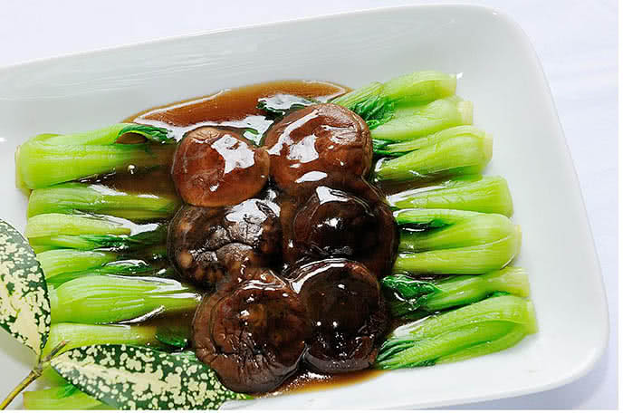

rau cải xào
nguyên liệu
- rau cải chíp (cải thìa)
- dầu thực vật
- dầu hào
- nấm hương khô
chế biến
- nhặt và rửa sạch rau cải chíp, vớt ra để ráo
- ngâm nấm hương vào nước nóng cho nở, vớt ra
- đun nóng chảo và bỏ dầu ăn vào
- cho rau và nấm vào xào trong 1 phút, đảo đều trên lửa lớn
- bỏ dầu hào vào và đảo 20 giây, sau đó tắt bếp và hoàn thành món
thành phẩm
